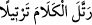
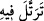

(s.a.)’in bir mikdar âyeti -az da olsa- öğrendikten sonra indiği izlenimini veriyor. İlerde
beşinci âyette gelecek olan, “biz sana ağır bir söz vahyedeceğiz” âyet-i kerîmesinin
gelecek zaman kipi ile gelmesi Kur’an’ın henüz nâzil olmayan kısmı itibariyledir.
Öte yandan bu emir -âyetin zâhirinden anlaşıldığına göre- bütün ümmete şâmildir.
Çünkü Kur’an’ın tertîl üzere okunması herkes için önemlidir. Buna göre emir “vücub”
ifâde eder. Nitekim âyetteki te’kid bunu göstermektedir. Ya da “nedb”; yâni mendubiyet
ifâde eder.
Peygamber (s.a.) Efendimiz okurken “bismillâh” ile “rahmân” ve “rahîym”
kelimelerini uzatırdı. Bismillâh ile Rahmân kelimelerinin bir elif mikdarı uzatılmaları
medd-i tabiîdir. Son kelime olan “Rahiym” kelimesine gelince bunun sonundaki “sükûn”
ârızi olduğundan buna medd-i ârız denip üç vecih/üzere okunması câizdir. Bunlar; “tûl”,
“tavassut” ve “kasr” biçimleridir. Medd-i ârizilerde tûl, üç elif mikdarı, mutavassıt iki
elif mikdarı ve kasr ise bir elif mikdarı çekilerek okunur.
Peygamber (s.a.) Efendimiz Kur’an’ı indirildiği gibi gâyet güzel okurdu. Onun
tecvidi; harfleri mahreçlerinden çıkararak ve her harfe “cehr, hems, ve lîn” gibi
sıfatlarının hakkını vererek okumak sûretiyle olurdu. Ve Peygamber (s.a.) Kur’an’ı
okurken kesinlikle “tekellüf”e kaçmazdı. Tekellüf; Kur’an’ın okunması esnâsında
harfleri çıkarırken kendini zorlamak, sıfatlarını belirtirken aşırılığa kaçmaktır. Tertîl ise
aşırı derecede uzatmaktan kaçınmak, “hadr”da, harfleri birbirine sokup karıştırmaktan
uzak durmaktır. Bir başka ifâdeyle; âyetleri okurken, -okumanın hızından dolayı- bâzı
harf ve kelimeleri diğerlerine dürmek ve dolamaktan kaçınmaktır. Söylemek
istediğimizi bir örnekle anlatmak gerekirse; Kırâat, beyazlık mesâbesindedir, eğer bu
beyazlık az olursa esmerleşir, çok olursa bu takdirde bembeyaz benekli alaca hastalığı
gibi olur. Normal okumanın üstündeki okuma, okuma sayılmaz. Bütün bu açıklamalardan
anlaşılıyor ki; tecvîd yâni Kur’an’ın güzel okunması üç şekildedir. Bunlar;tertîl, hadr ve
tedvîr’dir.
Tertîl; Kur’an’ı ağır ağır tane tane acele etmeden okumaktır. Kamus’ta tertîl kelimesi
açıklanırken şöyle deniyor: Arapçada “__WORD__ dendiğinde “filanca sözü çok güzel
tertib etti” demek olur. Yine aynı kökten türeme; “__WORD__ dendiğinde; filanca yavaş
yavaş okudu demektir. Bu okuyuş, kırâat imamlarından İmam Verş, Asım ve Hamza’nın
tercihidir. Peygamber (s.a.) Efendimiz’in şu ifâdesi Kur’an’ın tertîl üzere okunacağı
görüşünü teyid eder. Peygamber (s.a.) şöyle buyurur: “Kim Kur’an’ı üç günden daha
az bir sürede okuyacak olursa o kişi bu kitabı anlamamış demektir.” [151]
Kûtu’l-kulûb isimli eserde şöyle deniyor: Kırâat çeşitleri içinde en üstünü Kur’an’ı
tertîl üzere okumaktır. Çünkü bu okuyuş çeşidinde âyetlerin mânâları üzerinde iyiden
iyiye düşünme, derinlemesine kafa yorma vardır.
Tertîlin ve Kur’an’ı düşüne düşüne okumanın en üstün olduğu yer ise namazda
olanıdır.
İbn Abbas (r.a.) der ki: “Bakara sûresini tertîl ile üzere düşüne düşüne kırâat etmek